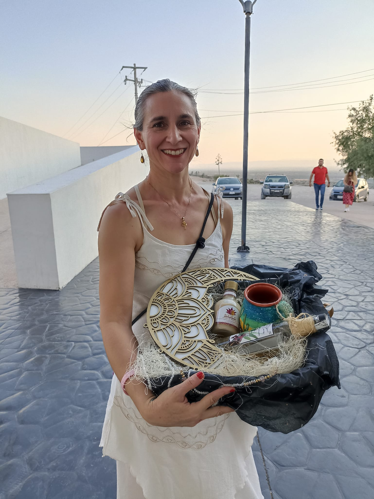
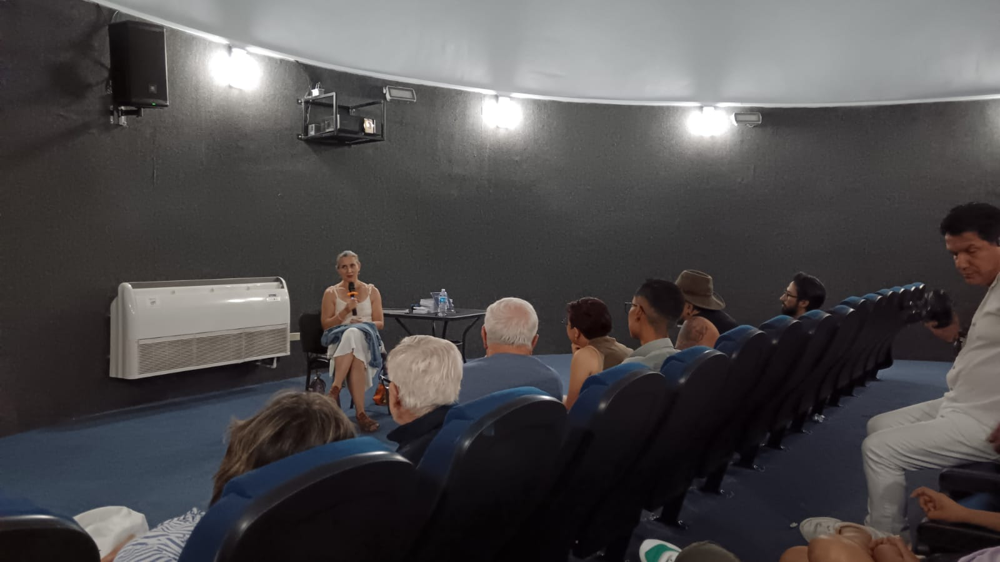
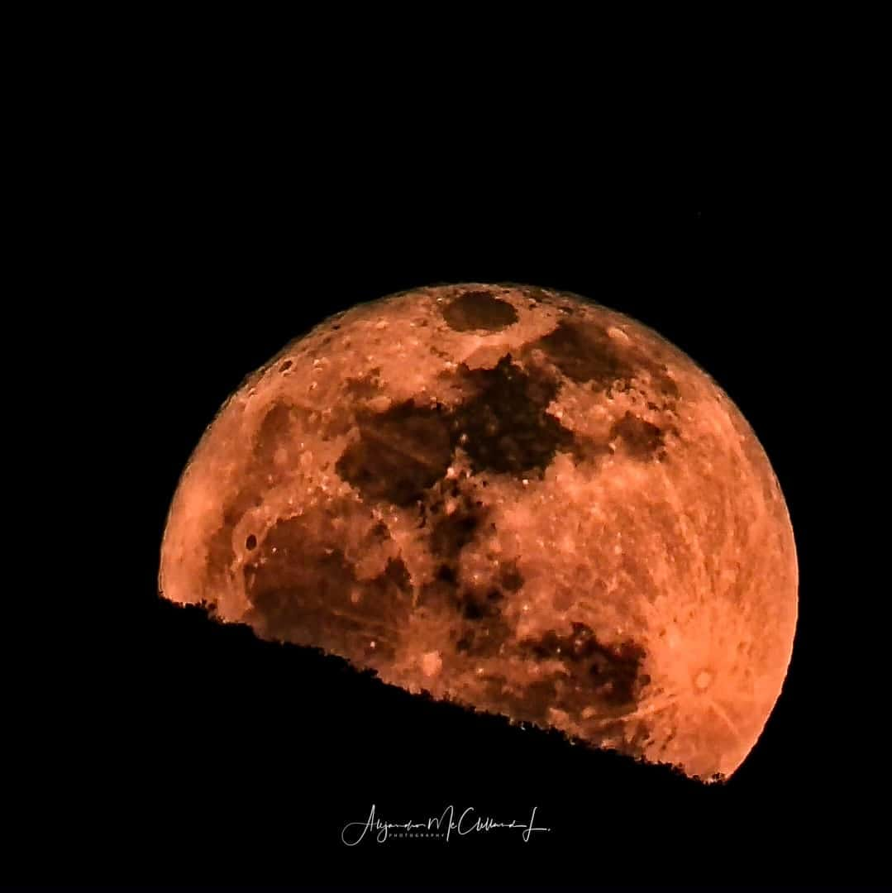
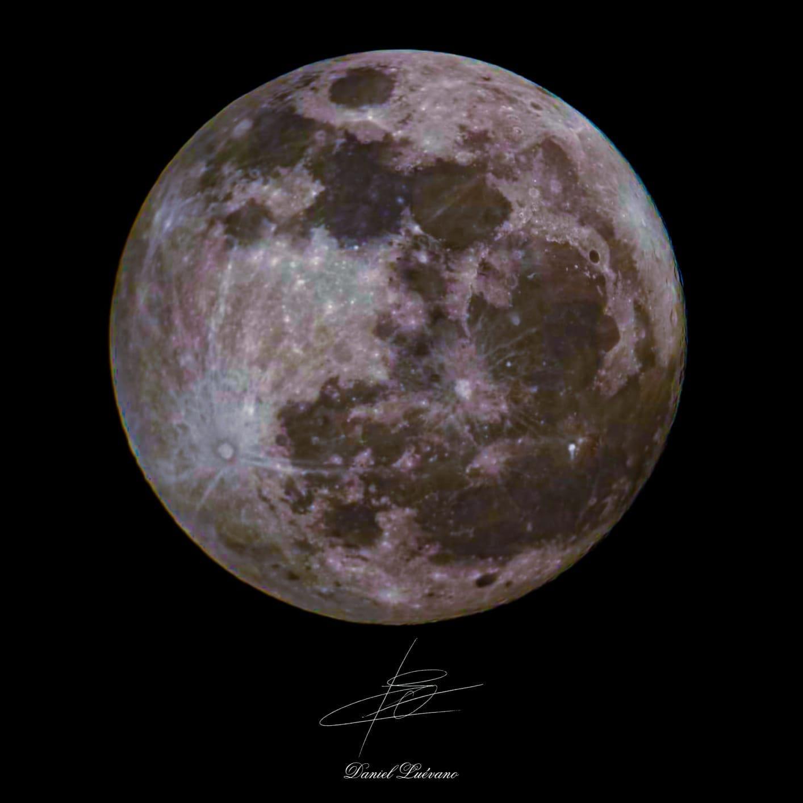
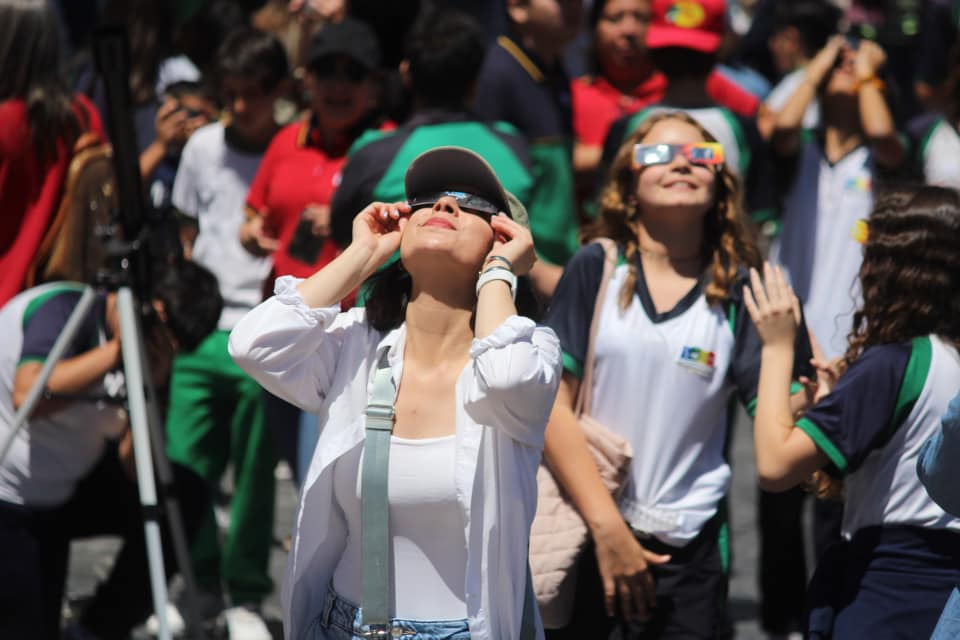
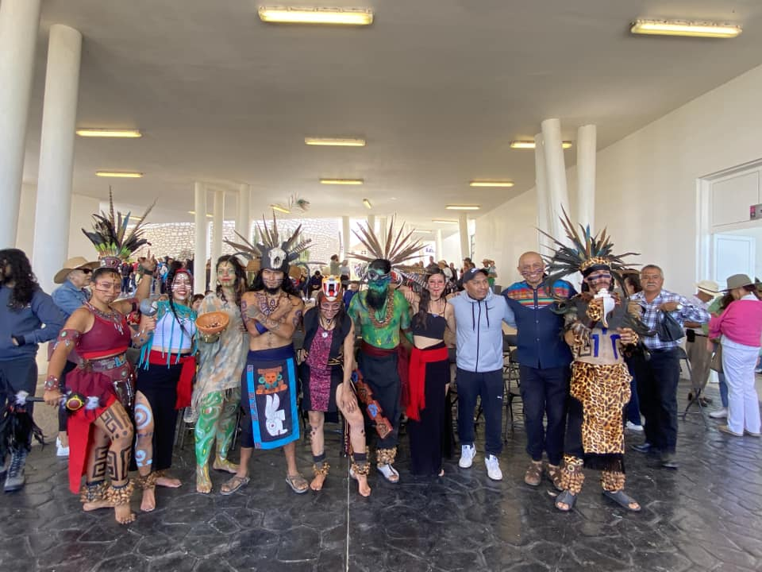

Alma Ruiz Velasco nació y creció en Aguascalientes, 100% hidrocalida. Se graduó de la licenciatura en física en el 2004 por la Universidad de Guanajuato y obtuvo su doctorado en ciencias por su investigación en evolución estelar con colaboración entre la Universidad de Guanajuato y el European Southern Observatory en Alemania. Hoy en día se dedica a escribir libros y a la pintura.
Agradecemos la visita de la Dra. Alma Ruiz Velasco que nos platicó sobre su vida, los retos y logros que tuvo que pasar para llegar a ser una astrónoma, una persona 100% hidrocalida.
 Una luna que comienza a verse más grande según se acerca el verano a nuestros días. Desde el Observatorio - Planetario Hipatia de Tepezalá 🔭
 El Observatorio - Planetario Hipatia de Tepezalá tiene fiesta por el eclipse solar. Tepezalá cuenta con el Observatorio Planetario Hipatia, que inició sus operaciones en el mes de octubre pasado.
En estos días, las y los colaboradores de este extraordinario lugar se están preparando para la jornada de actividades a propósito del eclipse solar total que ocurrirá el próximo 8 de abril y que, para fortuna nuestra, podrá ser visto en Aguascalientes en poco más de un 90% de su totalidad.
¿Cómo está funcionando el observatorio? ¿Cómo ha favorecido a la comunidad su apertura? ¿Qué actividades habrá con motivo del eclipse? De esto y más platicaremos con Enrique Álvarez Flores, Subdirector de Turismo del Ayuntamiento y Daniel Luévano Silva, operador técnico del macrotelescopio del observatorio.
Les comparto parte de lo vivido en este histórico eclipse solar que tuvimos la oportunidad de compartir desde el Observatorio - Planetario Hipatia de Tepezalá.
 